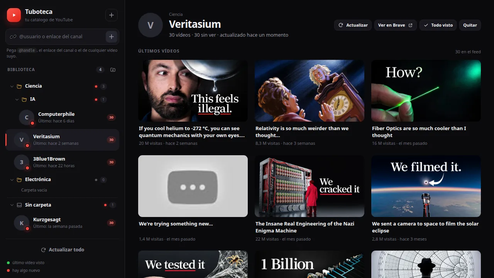

Tu YouTube, ordenado como un escritorio.
Un catálogo local de canales y videos con carpetas anidadas, estados visto/no visto y un reproductor que no depende de la API oficial.

Suscribirse no es organizar.
YouTube guarda canales, pero no te dice qué viste, qué te falta ni cómo agruparlo según tu criterio.
La lista de suscripciones crece y se vuelve un flujo infinito. Los videos importantes se pierden entre recomendaciones. Y no hay una forma simple de crear carpetas propias, anidadas, con estados de lectura.
Tuboteca propone un escritorio local: un servidor Node que lee los canales que tú eliges, guarda un árbol de carpetas y recuerda qué videos ya viste.
No usa la API oficial ni requiere una clave. Lee la página pública del canal, extrae `ytInitialData` y, si cambia, intenta la API interna de YouTube como respaldo.
Canales, videos y tres estados.
El servidor hace el trabajo pesado; la interfaz solo muestra el árbol y recuerda el estado.
Agregar
Acepta un handle, una URL de canal o un video; resuelve el ID y guarda el canal.
Leer el feed
Descarga la página pública, extrae `ytInitialData` y recorre los videos publicados.
Parsear
Convierte la estructura de YouTube en una lista plana de videos con título, fecha e ID.
Cachear
Guarda el resultado durante 10 minutos y conserva una copia stale si la red falla.
Marcar
El estado visto/no visto se guarda por video y se refleja en el punto de cada canal.
Un servidor pequeño, una interfaz de escritorio.
Node sin dependencias mantiene el estado; el navegador solo pinta y envía acciones.
Sin API oficial
No hay OAuth ni cuota. Se lee la página pública y se usa Innertube como respaldo.
Caché con stale
Si YouTube no responde, se muestra la última copia válida en vez de una pantalla vacía.
Escritorio propio
Carpetas anidadas, arrastrar canales y estados por video.
La biblioteca, en una pantalla.
Barra lateral, árbol de carpetas y panel de videos comparten el mismo espacio.
Cero dependencias, todo explícito.
Un solo archivo de servidor y una interfaz vanilla para que sea fácil de auditar.
El servidor usa únicamente módulos nativos de Node: `http`, `fs`, `path` y `url`. No hay `npm install`. El frontend es JavaScript vanilla y CSS propio. El estado se guarda en JSON y se escribe con `rename` atómico para evitar corrupciones.
Tuboteca: tu catálogo de YouTube, en local
Un catálogo de canales de YouTube con estética de escritorio: puntos verdes y rojos, carpetas anidadas y un reproductor integrado. El video recorre el servidor Node sin dependencias, la resolución de enlaces, las tres vías para leer el feed, la caché de diez minutos y la persistencia atómica en JSON.
Tuboteca: tu catálogo de YouTube, en local
Un catálogo de canales de YouTube con estética de escritorio: puntos verdes y rojos, carpetas anidadas y un reproductor integrado. El video recorre el servidor Node sin dependencias, la resolución de enlaces, las tres vías para leer el feed, la caché de diez minutos y la persistencia atómica en JSON.
Los fragmentos son del código real del repositorio. El catálogo, los nombres de canales y el historial son datos locales que no se incluyen en el video ni en el repositorio.
Lo que no promete.
Un proyecto serio también se explica por lo que deja fuera.
Preguntas típicas
¿Necesito una API key?
No. La app lee la página pública y usa la API interna como respaldo.
¿Dónde se guardan mis canales?
En `data/channels.json`, local. El repo publica una versión demo.
¿Qué pasa si YouTube cambia?
El parser puede fallar; la caché stale mantiene la última lista disponible.
¿Puedo crear carpetas?
Sí, el árbol permite anidar carpetas y mover canales.
¿Lo probamos?
El código, la documentación y las capturas están en el repositorio.